Solder Projects
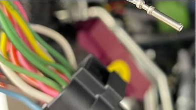
Personally, I solder very little. I save solder projects for repairs that have to be kept small or, in the field, maybe I don't have the correct terminal to make a repair and am forced to reuse the original.
Solder can be a good way to attach wires that are very different in diameter.
Soldering is about controlling heat.
- 'Tin' the solder iron and use this solder on the tip to help heat flow effectively where you want it.
- Try pre-heating the connection with a heat gun.
Too much heat travelling up the circuit that you're soldering can cause solder to travel up wires, making sections of the circuit stiff with solid solder. This will cause stress points and future wire breaks from vibration.
Crimp repairs are very reliable and often time superior.
Test Lead Parts
- 4-Foot silicone wire red lead
- 4-Foot silicone wire black lead
- Qty. 4 - Male 4mm banana plugs
- Qty. 2 - Red plug boot (with flex relief slots)
- Qty. 2 - Black plug boots (with flex relief slots)
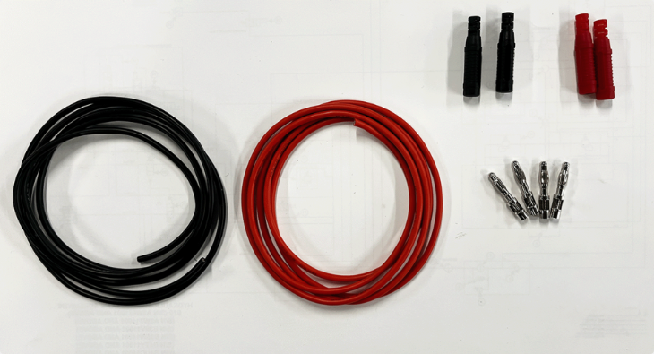
Don't forget to install the connector boots on the wire before soldering the plugs.
Notice the difference in the boots between male and female 4mm plugs. The boots for the male plugs have flex relief slots.
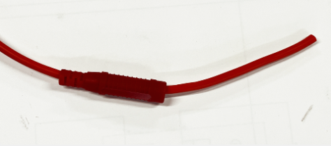
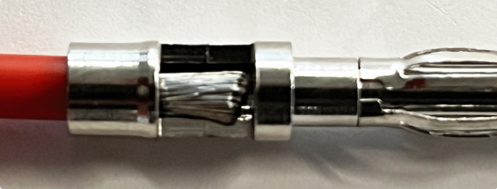
Strip just enough insulation off the wire to allow the conductors to fill the pocket of the plug. You do not want conductors to be exposed out the back side of the plug.
Avoid twisting the conductors. It only makes the wire bulkier.
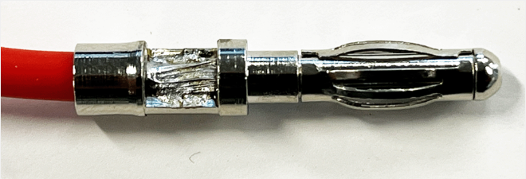
Make sure solder flows through the conductors and securely attaches the wires to the plug.
Solder all 4 plugs. Slide each plug boot in place. It may be helpful to slightly heat each boot.
Test Light Parts
- Handle
- Magnet
- 8x32 Bolt and nut
- #8 Crimp & seal eyelet
- Insulated P-Clamp
- 4-inch ground wire
- Qty. 2 - 1156 Bulb
- Qty. 2 - 1156 Bulb holder
- Qty. 2 - Female 4mm banana jack
- Red connector boot (without flex relief slots)
- Black connector boot (without flex relief slots)
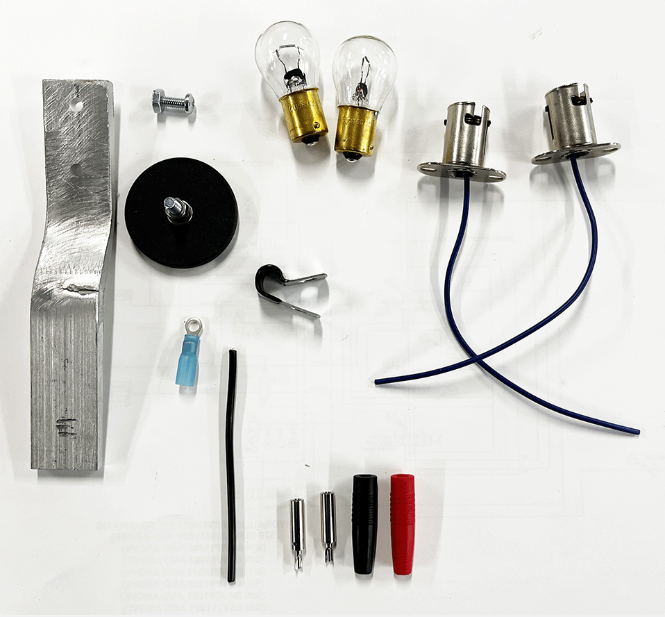
Assemble the bulb holder.
The bulb holders need to be wired in parallel. The bulbs ground through the bulb holder. Both holders will be bolted to the same ground. Both power wires need to be soldered to the same plug.
Don't forget to install the plug boot. The boots without flex relief slots work better on the female plugs.
Both positive wires from the center of the bulb holders will be soldered to a single 4mm female banana socket.
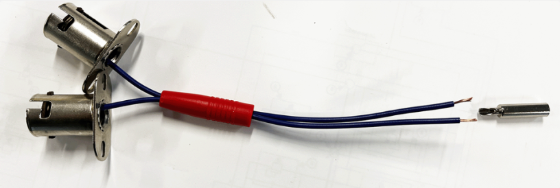
Trim only the necessary amount of insulation.
Avoid twisting the two wires together. This only make the wire end bulkier.
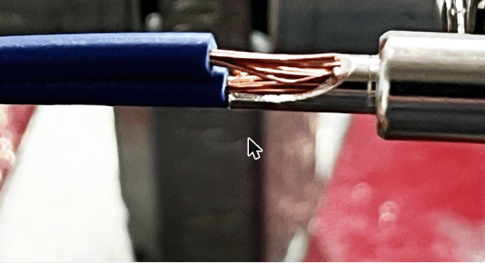
Solder the female 4mm socket. Make sure the solder penetrates the conductors and secures the wire to the socket.
Slightly heat and slide the socket boot in place.
Assemble the ground wire
Solder the single ground wire to a 4mm female socket.
Slightly warm and install the socket boot. The boots without flex relief slots work better on the female plugs.
Avoid twisting the conductors before inserting them into the splice.
Crimp the #8 eyelet with the proper tool.
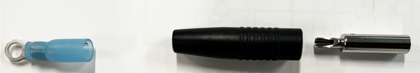
Don't use the non-insulated tool on an insulated splice. The non-insulated die will puncture the insulation. Corrosion will damage this connection.
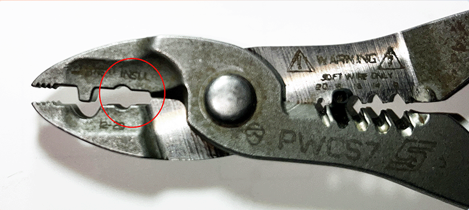
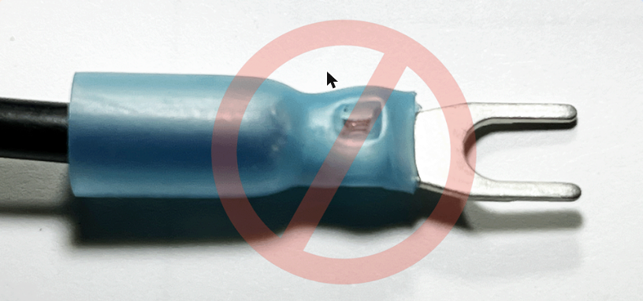
Heat the eyelet to seal:
- A small amount of glue should extrude from the end
- There should not be any conductors visible between the crimp and the wire insulation
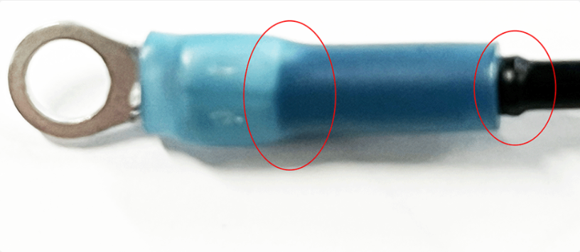
Assemble Bulb Holders
Pass the 8x32 screw through the first hole in the handle from the bottom.
Install both bulb holders, the ground wire eyelet, and 8x32 nut. This is the parallel ground connection.
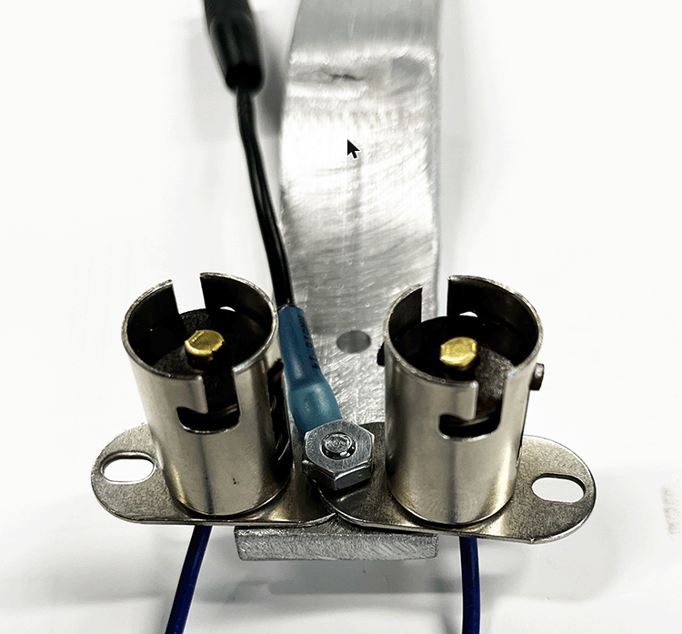
Assemble Magnet and P-Clamp
Insert threaded post of magnet through second hole.
Secure P-clamp around all three wires.
Install P-clamp, washer, lock washer, and nut.
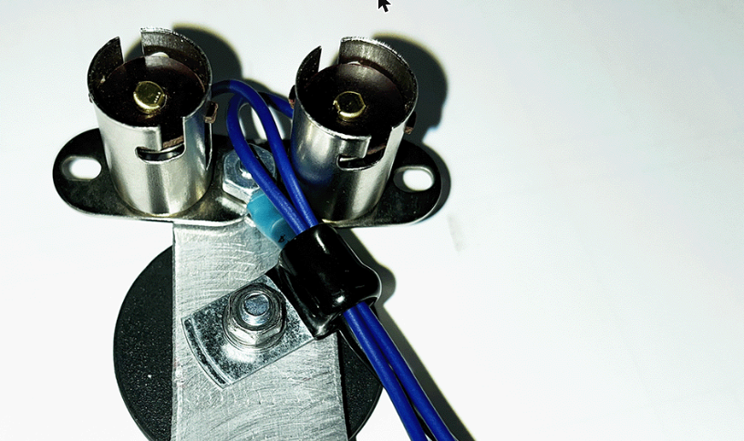